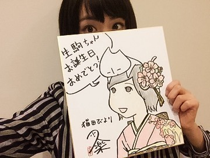
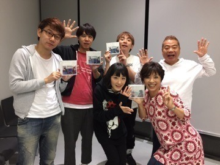
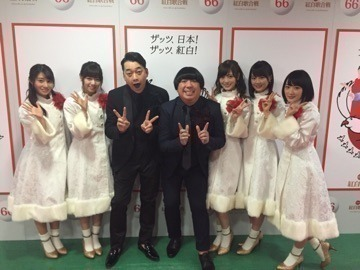
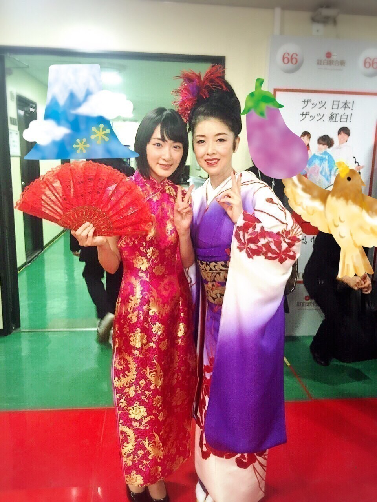

| 2016/01 04 Mon | 生駒里奈 バタバタしていたので(ง ˙ω˙)ว |
昨年の年末はバタバタしていたので1人で喜びを噛み締めていたシリーズをご紹介致します。
まず、
2016年もこの作品から生駒ちゃんの1日が始まりました
猫田びよりの作者
久楽さんからお誕生日おめでとう色紙を頂いておりましたヽ(・∀・)ノ
ジャンポリの収録中にサプライズで頂きました

うふ(^-^)
生駒ちゃんが振袖着ているよ(^-^)
実は色紙の裏にスペシャル漫画がありましたヽ(・∀・)ノヽ(・∀・)ノ
生駒ちゃん出てました嬉しかったヽ(・∀・)ノ
明日も猫田びより読んでから活動開始ですヽ(・∀・)ノ

元旦放送でした
戦うお正月みていただけましたか〜ヽ(・∀・)ノ？？
めちゃ豪華な芸能界の先輩達と写真撮って頂きましたヽ(・∀・)ノヽ(・∀・)ノ
OAも前出た時よりはまだリアクションましになってたかも知れないけどまだまだだなぁ。
今年はもっと頑張らないと！！

バナナマンさんヽ(・∀・)ノ
紅白にて、
本番、頭の歌い出しはずっと緊張して頭真っ白になりましたが、
バナナマンさんがずっと歌いながらサイリウム振りながら応援して下さってるのが見えてそれからは安心感で身を包まれて全力を出す事が出来ましたヽ(・∀・)ノ
本番前にお二人にパワー下さいと握手したのも効いたなぁ

藤あや子さん
秋田出身の大先輩の方と紅白という舞台に立てる日が来るなんて思いませんでした。
曼珠沙華という曲で踊れた事一生忘れられない宝です。
きっと生駒ふぁむのみんなも乃木坂ファンのみんなも生駒はこういうのダメそうって思ってたんだろうな〜。。
生駒ちゃん、
踊る事大好きなんだよ。
待ってましたとばかりにめちゃ気合い入りましたヽ(・∀・)ノ
振り付けの夏まゆみ先生には振り付けだけではなく、
気持ちをどう踊りにのせるかなど、
久しぶりに大切な事を丁寧に教えて下さいました。
時間がないギリギリの中で出てくる本気の魅せものもありますが、
小学生の頃
純粋にダンスが大好きで、
2時間のセットリストに三か月かけて練習していた日を思い出しました。
今は有難い機会が重なり
忙しいという言葉を口に出す時が多いです。
でも、
今年は言わない様にしようと思いました。
ひとつのステージを必死に練習してお見せする喜びをまた改めて感じたいから！
紅白歌合戦はすごい刺激をくれました！！
あぁ〜
ダンス習いたい〜(´；ω；｀)
何でもいいからひとつの作品を擦切れるくらい感じたい！
練習したい！
やらないと下手くそなままなんだ！
下手くそな自分は嫌だよ〜！！！
修行したい！
らりん〜ヽ(・∀・)ノ
沈金呼んで〜ヽ(・∀・)ノヽ(・∀・)ノ笑
今年も修行出来ますように！
へばなっ☆彡